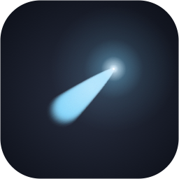

Four directions, each mocked at the real overlay size (720px). Every color in V1/V2 is taken straight from the app icon's palette (#090B13 → #292F41 background, #7DD3FC streak, #E0F2FE head). Same content in every mock so you can compare like-for-like: Terminal (selected), TextEdit, a recent file, calculator row.
Translucent grey blur, blue selection, 16pt names, 12pt paths. This is what you said feels grey and small.
The recommendation. Solid navy-black from the icon's background, names up to 18pt, paths in dimmed monospace, and a single cyan accent used sparingly: caret, selection bar, result count. The 1px "streak" under the search bar echoes the photon trail. Footer doubles as keyboard hints.
Louder, punchier selection: the whole row fills with the streak cyan and flips to dark text. Maximum contrast — you always know exactly what Return will do. Slightly less "quiet" than V1.
Everything monospace, dotted hairlines, bracket selection, a technical header strip. The most "high-tech" of the set — reads like an instrument panel. Risk: can feel cold and is densest to scan.
Flat white, near-black selection block, zero decoration. Very Vercel/Linear. The biggest visual departure — a light launcher over dark app windows is a strong look, but the opposite direction from the icon.
Cyan is the icon's streak — the true-to-brand default. Amber and green are shown in case you want the accent to pop harder against the navy (both are classic terminal phosphors).